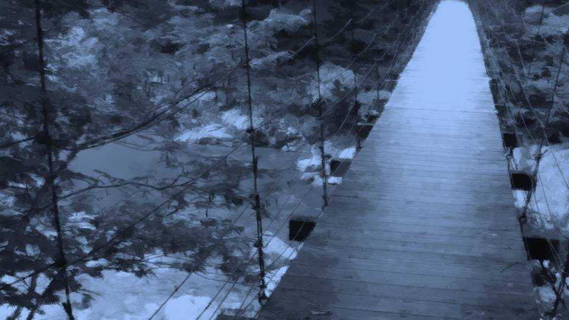
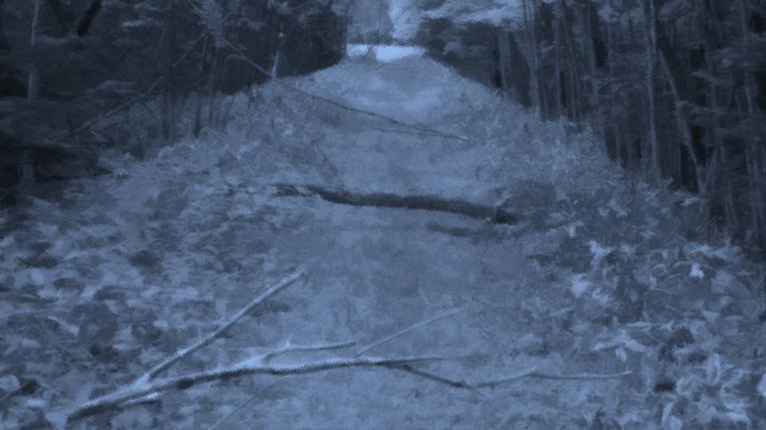
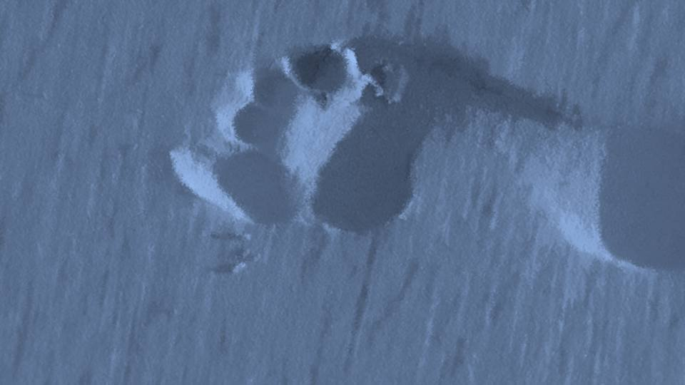

Shigatsu Youka ~Invitation~

The mountain stream came into view, and as we reached the suspension bridge, its murmur finally gave way to a roar like a waterfall.
Does it sound like a roar because this night sky is far too quiet?
I know well enough that a real waterfall doesn't sound like this.
Does it sound like a roar because this night sky is far too quiet?
I know well enough that a real waterfall doesn't sound like this.
The buggy can go beyond here too, they say, but then it runs through the shallows of the river, not over the bridge.
This bridge is used only when Kana-chan goes to school, or for hunting, or so I hear.
This bridge is used only when Kana-chan goes to school, or for hunting, or so I hear.

"Natsumi-chan, can we take a little detour?"
"A detour? But―"
"Just a little, there's just one place I want to stop by."
"Yeah, okay."
"A detour? But―"
"Just a little, there's just one place I want to stop by."
"Yeah, okay."
Kana-chan stopped about a minute's walk off the route.
A plain riverbank, with nothing to mark it.
On one side of the riverbank is the river; on the other, a cliff stands in the way.
Kana-chan faced the cliff side and crouched there.
A plain riverbank, with nothing to mark it.
On one side of the riverbank is the river; on the other, a cliff stands in the way.
Kana-chan faced the cliff side and crouched there.

"This is where Mom died."
Then Kana-chan closed her eyes and joined her hands.
Looking closely, a few flowers had been laid at the cliff side.
These are― daphne.
A spring flower that blooms in March.
In the language of flowers― 'Immortality.' 'Imperishability.' 'Eternity.'
Then Kana-chan closed her eyes and joined her hands.
Looking closely, a few flowers had been laid at the cliff side.
These are― daphne.
A spring flower that blooms in March.
In the language of flowers― 'Immortality.' 'Imperishability.' 'Eternity.'
What does it mean to offer flowers of immortality and imperishability to the dead?
Was there no deep meaning, and someone just happened to offer daphne?
It feels oddly ironic, somehow...
Was there no deep meaning, and someone just happened to offer daphne?
It feels oddly ironic, somehow...
"These flowers, Daddy leaves them here."
"Kotaro-san does?"
"About once a week, with the season's flowers."
"Kotaro-san does?"
"About once a week, with the season's flowers."
Kotaro-san still can't forget Sakura-san.
Faithfully visiting her grave even after 10 years sounds like a sweet story, but you could also say Kotaro-san has been suffering all these 10 years.
Faithfully visiting her grave even after 10 years sounds like a sweet story, but you could also say Kotaro-san has been suffering all these 10 years.
"Sakura-san passed away right after you were born, didn't she?"
"Yeah, I was zero, I couldn't even walk yet. Mom―there are hardly any pictures of her left, so I don't really know what she was like... But everyone always says she was like a goddess."
"I see. So everyone loved her."
"Yeah, I was zero, I couldn't even walk yet. Mom―there are hardly any pictures of her left, so I don't really know what she was like... But everyone always says she was like a goddess."
"I see. So everyone loved her."
"Heh heh! And even though I'm that Mom's daughter, I turned into a tomboy!"
"But as long as you're doing well, I'm sure your mom is happy too."
"Yeah. Sometimes I go to see Mom by myself, too."
"You come here to visit her grave?"
"Nuh-uh, there's a secret base Mom left me. You know, the cave Haruka-chan went to look for the mummy in. Mom made it her secret base when she was little, too."
"But as long as you're doing well, I'm sure your mom is happy too."
"Yeah. Sometimes I go to see Mom by myself, too."
"You come here to visit her grave?"
"Nuh-uh, there's a secret base Mom left me. You know, the cave Haruka-chan went to look for the mummy in. Mom made it her secret base when she was little, too."
"Then maybe your mom was a tomboy too?"
"Oh! Then when I grow up, maybe I can be like a goddess too!?"
At that, Kana-chan brought her face close to the daphne.
"Oh! Then when I grow up, maybe I can be like a goddess too!?"
At that, Kana-chan brought her face close to the daphne.
"Mom, lots of guests came today!
Things are rough right now, but I'm sure this will be a fun, good place again!
So...
so Mom, wait just a little longer until then, okay?"
Then she stood up briskly,
"Sorry for the wait! Let's go!"
Kana-chan's detour seems to have ended safely.
I turned around to head back to the path to the abandoned hut.
"Sorry for the wait! Let's go!"
Kana-chan's detour seems to have ended safely.
I turned around to head back to the path to the abandoned hut.

"Obasan!?"
"............"
A little way off from us stood Obasan.
But she was frowning, looking lonely.
What happened to Haruka?
"............"
A little way off from us stood Obasan.
But she was frowning, looking lonely.
What happened to Haruka?

"Obasan, there's blood...!"
"It's all right, this is Chigaya-chan's blood."
"Sis's...?"
Come to think of it, Chiga-nee was bleeding all over just now.
So Chiga-nee and Obasan had met after all.
But even so, why the blood...
"It's all right, this is Chigaya-chan's blood."
"Sis's...?"
Come to think of it, Chiga-nee was bleeding all over just now.
So Chiga-nee and Obasan had met after all.
But even so, why the blood...
"What about Haruka...?"
"I'll tell you as we walk. Chigaya-chan told you to come here, didn't she?"
"Yeah..."
Obasan's face, as before, looked a little lonely.
"I'll tell you as we walk. Chigaya-chan told you to come here, didn't she?"
"Yeah..."
Obasan's face, as before, looked a little lonely.
As we walked, the path grew muddier little by little.
Had there been a passing shower?
Had there been a passing shower?

Only the squelching footsteps of three people echoed through this too-vast mountain.
Not even an animal's cry could be heard.
Besides our footsteps, only a breeze now and then brushing my eardrums.
Not even an animal's cry could be heard.
Besides our footsteps, only a breeze now and then brushing my eardrums.

"Natsumi-chan, I'm sorry..."
I don't know what Obasan did, but she apologized in advance.
Don't tell me she got Haruka badly hurt?
If so, never mind the abandoned hut, we have to get her to a hospital fast.
Hard to manage in this situation, though...
I don't know what Obasan did, but she apologized in advance.
Don't tell me she got Haruka badly hurt?
If so, never mind the abandoned hut, we have to get her to a hospital fast.
Hard to manage in this situation, though...
"I got separated from Haruka."
"Huh...?"
"Huh...?"
"Auntie, then I'll go look for her!"
Kana-chan stepped forward and made the offer.
Kana-chan certainly is the right one to search for Haruka.
Kana-chan stepped forward and made the offer.
Kana-chan certainly is the right one to search for Haruka.
"Ah, wait, um, Haruka is..."
But Obasan seemed oddly troubled by that welcome offer.
Could it be... Obasan too...
But Obasan seemed oddly troubled by that welcome offer.
Could it be... Obasan too...
"Um, Obasan, could it be you're lying so I won't see or hear it?"

"What?"
"Oh, I get it! Through Natsumi-chan, it'd get out to Shigatsu Youka!"
"You knew?"
"Yeah. Dad and Mom gave me hints."
With that, Obasan stopped walking.
"Oh, I get it! Through Natsumi-chan, it'd get out to Shigatsu Youka!"
"You knew?"
"Yeah. Dad and Mom gave me hints."
With that, Obasan stopped walking.
"I can't tell you where Haruka went.
Shigatsu Youka―if it would find out, then I can't tell you, Natsumi-chan."
"Then, Obasan, you know where Haruka went?"
"I know. That's all I can tell you, Natsumi-chan. Please understand. It's for Haruka's sake."
"Then, Obasan, you know where Haruka went?"
"I know. That's all I can tell you, Natsumi-chan. Please understand. It's for Haruka's sake."
I see. So Obasan put Haruka's safety first and had her take shelter somewhere.
If Haruka is safe, then that's a relief for me too.
If it would threaten Haruka's safety, better I don't know.
If Haruka is safe, then that's a relief for me too.
If it would threaten Haruka's safety, better I don't know.
"Got it. As long as Haruka's safe, that's all I need."
"Thank you, Natsumi-chan..."
"Thank you, Natsumi-chan..."

"You were right after all, Natsumi-chan! With nothing but secrets, the curse-killings will never get solved!
Hm?
Huh?"

Along the muddy mountain path, a great mass of earth and rock and fallen trees had been shoved aside.
Had there been a landslide?
It looked as if the earth that had blocked the path had been pushed to the side.
Had there been a landslide?
It looked as if the earth that had blocked the path had been pushed to the side.
"This wasn't here until this evening."
"What?"
"It rained really hard around here this evening. So the landslide was probably then―"
"Then the work got finished this fast?"
"What?"
"It rained really hard around here this evening. So the landslide was probably then―"
"Then the work got finished this fast?"
Kana-chan seems to find this earth shoved to the sides odd, and now I finally understand it too.
Pushing this much earth to both sides is impossible unless a great many people spend time on it.
But most of them were out searching for Chiga-nee or putting out the storehouse fire.
This settlement doesn't have enough people for landslide work.
Pushing this much earth to both sides is impossible unless a great many people spend time on it.
But most of them were out searching for Chiga-nee or putting out the storehouse fire.
This settlement doesn't have enough people for landslide work.
"Look at this."
Obasan pointed at the ground.
Obasan pointed at the ground.

Straining my eyes, there were indeed many footprints.
"Human footprints, barefoot."
"Right. Moving a landslide barefoot―strange, isn't it?"
"Even way out here in the country, people wear shoes..."
"Right. Moving a landslide barefoot―strange, isn't it?"
"Even way out here in the country, people wear shoes..."
In other words, in a short time, several humans, barefoot, cleared this earth away.
Nothing could do that short of some monster-human with the brute strength of a monster...
A human with superhuman strength...
A way to give someone superhuman strength...
Nothing could do that short of some monster-human with the brute strength of a monster...
A human with superhuman strength...
A way to give someone superhuman strength...
"Droga?"
"It's true, with Droga you'd get superhuman strength. But carry this much, and your body would break. Droga doesn't raise your strength; it takes off the brake in the brain that keeps you from overusing it. Strain yourself too far and torn muscles, dislocations, fractures happen just like that."
"It's true, with Droga you'd get superhuman strength. But carry this much, and your body would break. Droga doesn't raise your strength; it takes off the brake in the brain that keeps you from overusing it. Strain yourself too far and torn muscles, dislocations, fractures happen just like that."
"So it isn't Droga?"
"It's possible, maybe with some special way of using it you could do this work... But going barefoot is strange, and I don't see why anyone would go that far to clear a landslide. I thought it was strange, so I stopped heading for the abandoned hut. I came back to look for some kind of clue, and found you two by the river."
"It's possible, maybe with some special way of using it you could do this work... But going barefoot is strange, and I don't see why anyone would go that far to clear a landslide. I thought it was strange, so I stopped heading for the abandoned hut. I came back to look for some kind of clue, and found you two by the river."
"But... we can't stay here forever, right?"
"Should I go take a look first?"
"Better all three of us go. If we split up here, our defense gets thin."
Defense? What does that mean... is something going to attack us?
"Better all three of us go. If we split up here, our defense gets thin."
Defense? What does that mean... is something going to attack us?
"Then Auntie, you go in front.
I'll take the back, and Natsumi-chan's in the middle."
"Um, what do you mean...?"
"We don't know what'll happen, so we go carefully. It's okay, we'll protect you, Kana-chan and I."
"Um, what do you mean...?"
"We don't know what'll happen, so we go carefully. It's okay, we'll protect you, Kana-chan and I."
"You can rest easy―you're in safe hands!"
As if I could relax!
As if I could relax!

We moved along the muddy path at Obasan's pace.
Then me, and Kana-chan at the rear.
I don't really get it, but is Kana-chan good in a fight?
She tried to face those residents alone, and even now Obasan trusts her completely to guard her back.
Then me, and Kana-chan at the rear.
I don't really get it, but is Kana-chan good in a fight?
She tried to face those residents alone, and even now Obasan trusts her completely to guard her back.
With no time even to think that through,

an old mountain hut appeared before us.
What does Chiga-nee mean to do by gathering us here?
What does Chiga-nee mean to do by gathering us here?
"I'm opening it."
"Natsumi-chan, step back."
Obasan put her hand on the door, and, pulled by Kana-chan, I stepped back a little from the abandoned hut.
Would a monster-human lying in wait burst out, or a planted bomb go off?
Against such premonitions, the door opened quite peacefully, apart from an eerie creak.
Would a monster-human lying in wait burst out, or a planted bomb go off?
Against such premonitions, the door opened quite peacefully, apart from an eerie creak.
"It's all right. There's no one inside."
"Natsumi-chan, let's go."
"Yeah..."
"Yeah..."

"Phew, let's rest a little.
Oof―
here―
we go!"
She sat down with a grunt more middle-aged than her actual years.
Even Obasan must be worn out today.
She sat down with a grunt more middle-aged than her actual years.
Even Obasan must be worn out today.
"Natsumi-chan, aren't you tired?"
"I'm fine."
This abandoned hut seems to have been left uncleaned for ages.
Apart from a plain table and chairs, nothing to speak of.
No electricity, of course, and probably no running water either.
"I'm fine."
This abandoned hut seems to have been left uncleaned for ages.
Apart from a plain table and chairs, nothing to speak of.
No electricity, of course, and probably no running water either.
Still, it has a roof and walls, and keeps out the wind and rain.
If we'd been caught by a passing shower on that mountain path, I suppose we'd be sheltering here.
If we'd been caught by a passing shower on that mountain path, I suppose we'd be sheltering here.

My phone, as expected, has no signal.
So there's no telling my parents how things stand now.
So there's no telling my parents how things stand now.
Read ✓ Next in this arc →